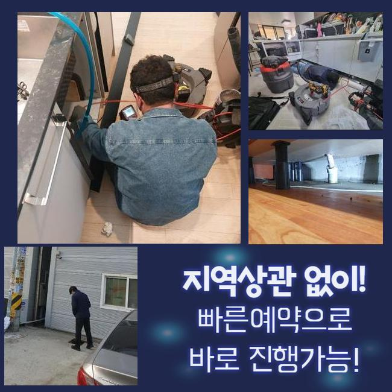
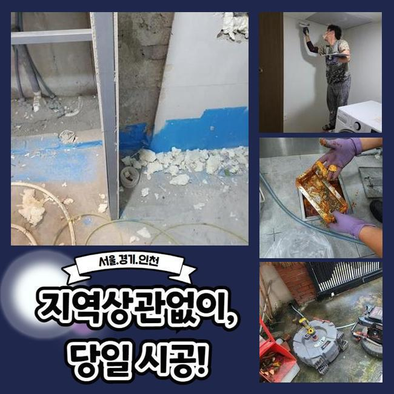
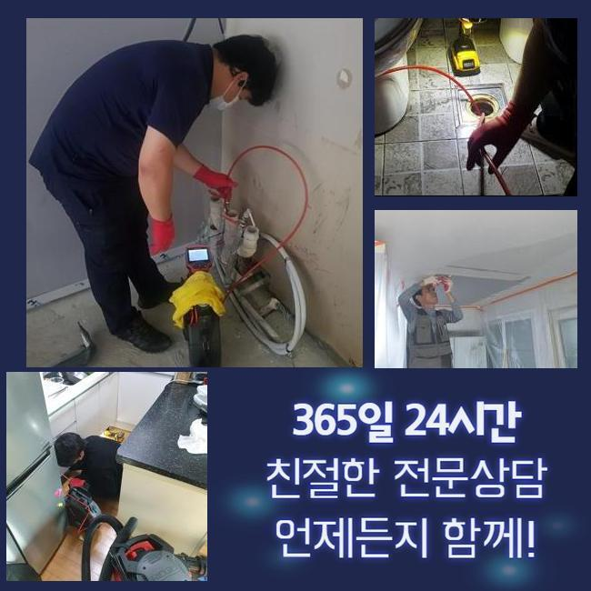
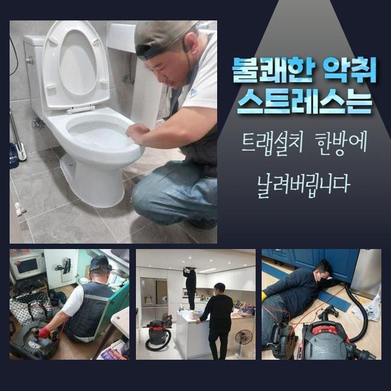
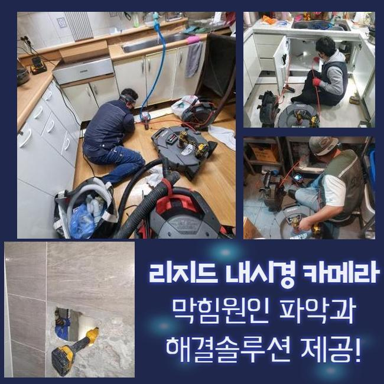
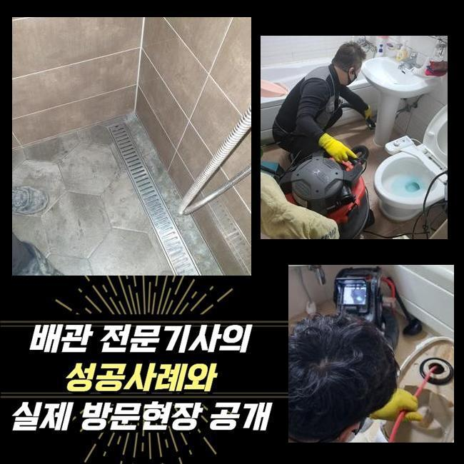

🏠 안양 박달1동화장실하수구막힘 오수맨홀청소 수리업체
안양 싱크대막힘 전문 시공 후기

📋 작업 개요
- 위치: 안양
- 서비스 유형: 싱크대막힘, 하수구막힘, 배관막힘, 맨홀막힘, 배관청소, 고압세척
- 작업 일시: 2025. 4. 8. 23:18
- 업체명: 하수구수사대 (010-5615-2118)
🔍 문제 상황
안양 박달1동화장실하수구막힘 오수맨홀청소 수리업체
주방에서 주방쪽이 막힌다면 사용 자체에 불편들을 감내해야하죠
음식점일땐 이같은 문제들이 생기면 매출에까지 고충을 안겨줄 수 있어요
그러므로 전문적이고 해결해주는것이 필요하겠습니다
음식점에서 하수도에서 통수오류가 나타나게 되었어요
주변의 식당에도 비슷한 문제들이 목격되었어요
이런 증상은 공동라인에 까닭이 생겨났을 여지를 생각해야 합니다
그리하여 공유관로를 사용하는 집수설비의 진단도 수반되야되는 상황이였죠
내방드리고서 먼저 주방 주방쪽이 막히게된걸 보게되었어요

🔎 원인 분석
💡 전문가 진단: 정밀 진단 장비를 사용하여 슬러지의 고착 여부를 판명하고 타격/세척 작업을 실시했습니다.
결과적으로는 배수들이 진행되지 않았고 시공이 필요했죠
배관의 결함현상은 수백가지의 요소로 나타나는데 그 가운데 상당수의 이유는 노후되었다거나 이물들이 누적되는 경우겠습니다
이러한 배수 정체는 위생적인 부분에도 직관적인 영향들을 미치므로 그에 맞는 방식들을 꾀하게 되었습니다
내시경카메라를 배수관으로 넣어주면서 구석까지 관찰하니 전체적으로 잔여물들이 자리하고 있던것을 인지했죠
내시경장치는 협소한 하수관을 살피는 기계로 카메라기능이 있는 선을 하수도로 삽입하여 라이브로 내측을 확인시켜주는 기기입니다
점검하니 이물들이 배출이 안되고 고여버린 상태였는데요
배수관이 오래된 경우라던가 구조때문에 나타난 문제였다기보단 통수시점에 흐르던 식자재의 잔해가 누적되어 하수 배출을 힘들게 만든게 원인이였죠
주방의 관로와 바깥관로가 통하고 있던 구조라 싱크대라인에서 등장한 문제들이 외측까지 영향력을 미친 현상이였는데요
까닭들을 체크해보고 서둘러 하수도를 조치해보고자 청소해주었어요
이 시기에 이용한건 플렉스 샤프트라는 기기로서 이 기기는 배수관에서 원 운동을 하며 흡착물을 제거하는 고마운 기기에요

🔧 작업 과정
노커체인을 사용해주면 주방쪽이 막혀버렸을때 오염물을 제거시키고 더 나아가 배수관을 손상케하는 일도 없고 스무스하게 작업을 진행시킬 수 있죠
샤프트기기를 준비시켜 고착화를 보이는 곳에 접근한 후 체인으로 흡착물을 청소해보았어요
다양한 잔재가 샤프트장비에 엉켜서 빠져나왔죠
제거된 이물들을 주시해보니 예상한 바와 같이 씽크볼에서 침투된 음식물들과 기름들이 대부분이였어요
이 중 식재료들이 상당수였는데 손질을 하실때 다듬어진 뿌리들의 잔재로서 밖에서부터 흐르며 통수를 불가하게하는 까닭이 된것입니다
뿌리들은 안전하게 배출되지 않아서 내측에서 정체되어 막힘문제를 양산시킵니다
음식물쓰레기등과 기름덩어리들도 많은 양들이 나왔는데 씽크대에서 이용되는 기름들이 관로로 빠져나가면서 중간중간에 굳어지게된것입니다
기름성분은 배수관에서 기간이 흐름에 따라 굳게되며 내부표면에 붙어버리며 다른 음식쓰레기와 혼합되어 넓은 범위가 막힘을 만들어내는데요
기름의경우엔 지속해서 딱딱해지므로 간단하게 제거시키는것에 무리가따르는 케이스가 8할 이상이죠
샤프트기계를 준비시켜 이물들을 탈락시키고 석션장치를 삽입하여 밑으로 떨어진 조각조각을 빨아당겨 빈틈없이 정리해주었어요
딱딱해진 기름덩어리들과 탈락된 오염물들도 정리해주고 작업대상 관로를 내시경장비들로 점검하고 오염도를 목격했어요
이상 징후들은 멈추게되었고 밖의 하수도의 솟구치는 영향까지 문제없이 완화되었어요
작업들이 일단락되고 고객께 씽크대 관로의 관리적측면의 도움되는 내용들을 설명했어요
첫번째로 배수구안으로 잔여물질들을 거르지않은채 배출시키지 않는게 중요하게 작용한다고 전해드렸어요
덧붙여 딱딱한 식자재나 기름물질들은 하수구 막힘의 여러 트러블의 요소가 될 가능성이 높아 필히 잔해들을 씽크대로 버리기에 앞서 따로 폐기해야한다고 부탁드렸어요
기름성분은 점성이 높고 내부에서 굳어버리므로 사용한 기름들은 키친타올로 걷어내고 세척해주시는것이 안정적인 처사가 될거에요


✅ 작업 완료
예상에 없던 문제들을 막기위해선 계속해서 배수구들을 관리하고 필요할 경우 클리너들을 사용하는게 도움되는것 또한 설명했어요
의뢰인분은 저희의 설명을 들으시고는 신경써서 관리들을 꼼꼼하게 하리라 얘기해주셨는데요
하수구 증상들은 방임한다면 최초상태보다 심각성이 두드러지기에 선제적으로 조속히 대처하는게 제일 좋습니다
마무리까지 마쳐 고객의 고민들을 타파하여 안심할 수 있었고 갑작스러운 물 안빠짐 현상을 막아내기 위한 적재적소의 점검들과 동반되야함을 최종적으로 말씀드립니다



⚠️ 주방 싱크대 배관 막힘 예방 수칙
- ✅ 기름기가 묻은 식기나 프라이팬은 설거지 전 키친타올로 반드시 기름때를 닦아내세요.
- ✅ 주기적으로 싱크대 개수대에 뜨거운 물을 가득 받아 한 번에 내려 배관 내부 기름을 씻어내세요.
- ✅ 배수구 거름망을 미세한 필터로 사용하시고 음식물 찌꺼기가 틈으로 새어 들지 않게 관리하세요.
- ✅ 베이킹소다와 식초를 뜨거운 물과 함께 일주일에 한 번씩 부어주면 배관 살균과 막힘 예방에 좋습니다.
💡 핵심 정리
- 확실한 장비 작업(내시경 점검 및 샤프트 스케일링)으로 원인을 뿌리 뽑습니다.
- 작업 후 1년 이내에 동일한 부위 재발 시 100% 무상 A/S 서비스를 보장합니다.
- 서울 · 경기 · 인천 전 지역에 24시간 언제든 긴급 출동할 수 있도록 항시 대기 중입니다.
❓ 자주 묻는 질문 (FAQ)
🚨 안양 싱크대막힘 문제로 고민이신가요?
정확한 원인 진단과 확실한 시공으로 재발 없는 해결을 약속드립니다.
24시간 긴급 출동 | 서울 · 경기 · 인천 전지역 | 1년 내 재발 시 무상 A/S